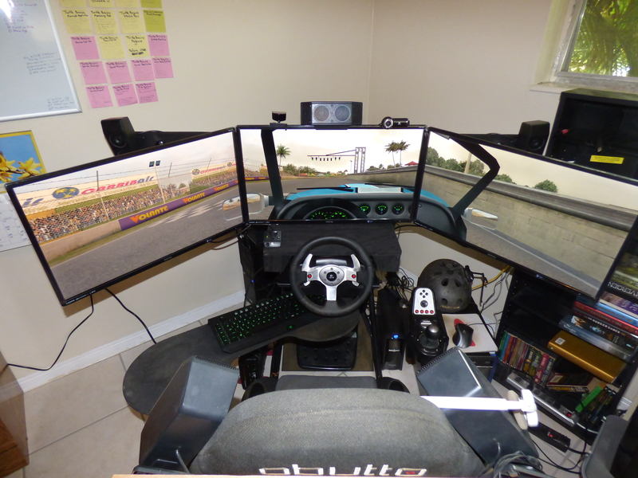
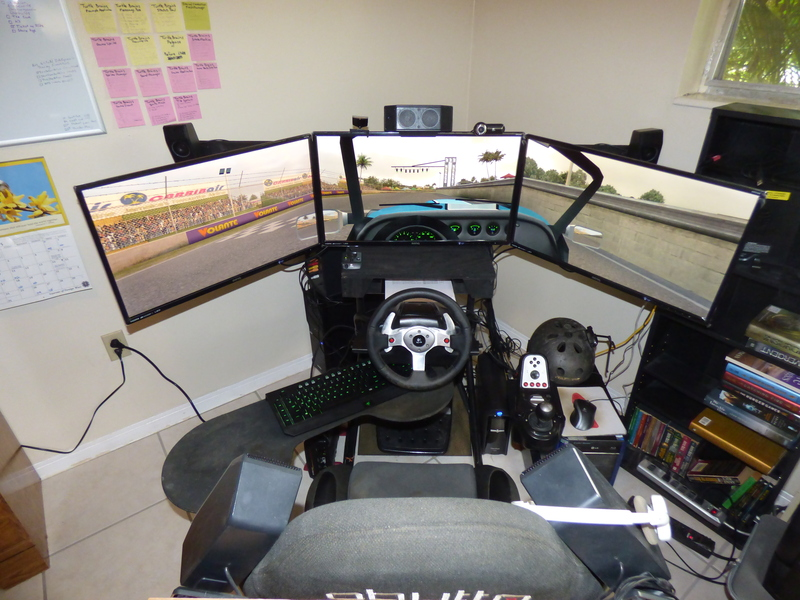
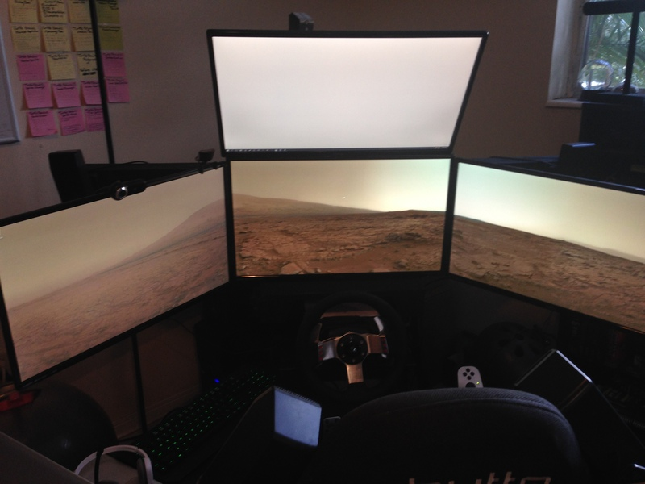
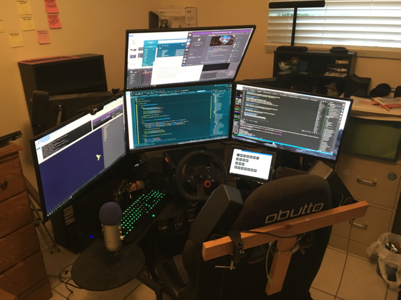
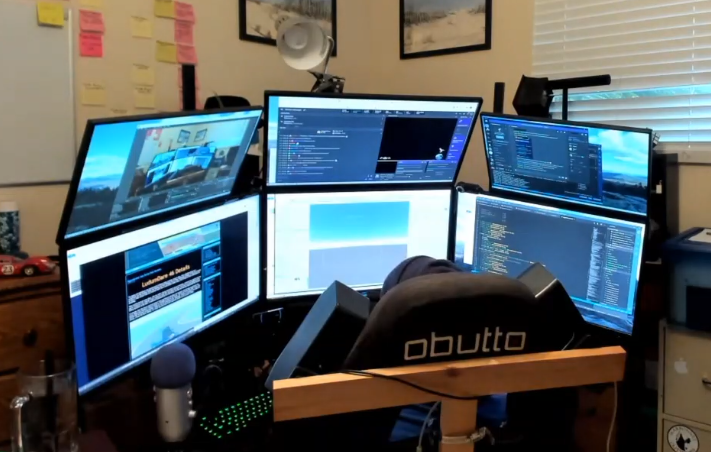

Tim's first racing setup!Monitor upgrade from CRT to flatscreens!New comfy racing chair!Sara cat goes meow!Third monitor!New "desk"!Laptop and TV!New setup with home-made wooden monitor holder, on a sliding thingy!In furthest-away position.Fourth monitor!Stream deck monitor!Two more screens!